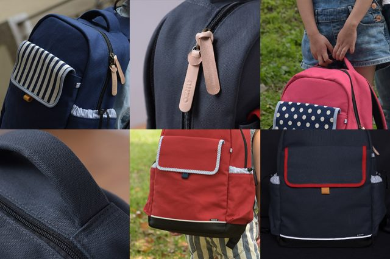
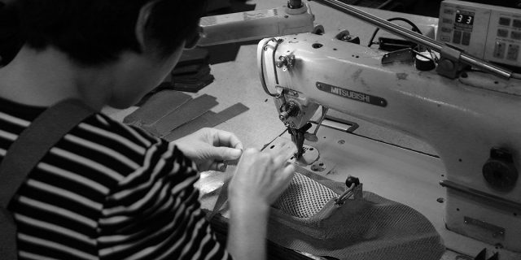
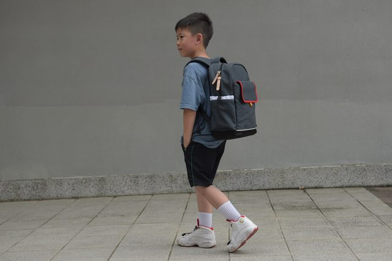

怎麼選書包？ 一位媽媽設計師的開發心得(上集-護脊)
書包收納容量多大才夠、護脊與輕量化到底有沒有用？
若您正想選一個能揹六年的書包
書包要一口氣用六年真的很不容易，小學生正在長高階段，現在購買適合低年級的書包，將來高年級時會覺得太小，而適合高年級的書包，低年級會覺得太大。
容量需求的問題也是較難預估的，高年級的課業較多，書包容量的需求較大，若揹低年級容量的書包，到高年級通常會比較難裝一點。
孩子破壞力比較強，也還沒那麼懂得愛惜物品，書包要用六年都不壞也是一大考驗。
我每天接送孩子上學都會觀察小學生揹的各式書包，雖爾偶還是能看到高年級生揹低年級書包的，但真的不多。一般來說，至少分成低年級及高年級兩個階段來選購書包，是比較可行的。
印象中我們那年代自強牌和達新牌書包是領導品牌，現在對舒適度要求已經跟我們那年代差很多了，課業及書本需求都不一樣，已經回不去那個年代啦，也真不好比較了。
還記得六、七年級生揹的書包嗎？以前的書包好薄喔！
https://oops.udn.com/oops/story/6699/2833726
跟大人包不同，孩子該有專用的設計
還記得去年正在募資第一代書包的時候，有天接到一則訊息，一位媽媽想帶腦麻的孩子來工作室試揹書包，因為孩子的手部比較沒力氣，試過很多種書包拉鍊都開的很吃力，後來媽媽私訊給我，說現在孩子用我們的書包可以自己開書包了，我聽了相當感動。
那給我很大的動力跟提醒，孩子有很多方面與大人不同，讓孩子親自試看看，並且聽取孩子的意見來改善設計是很必要，家長帶孩子買書包時，別忘了讓他自己試試看好不好用。

- 扣具拉鍊都要好開
小朋友手比較沒力氣，小肌肉也還不易做精細的動作，要讓孩子用看看壓看看，拉鍊和扣具的規格很多，看起來都差不多，但用起來感覺差異很大，我們要來的各種測試樣品可以放滿整個桌子，價差數十倍之多，比較後真的一分錢一份貨，這個得親自試過才知道，另外，拉鍊頭選大點好握的對孩子比較好施力。 - 磁吸式前口袋
因為我是一個不喜歡小孩不把包包關好的媽媽，前口袋不管是用磁扣還是用拉鍊，都有不被關上的風險，所以前口袋我們是使用隱藏磁吸式的，一拉就開，一放就關，除了不費力外，孩子也不會忘了關好，而東西沿路掉。 - 舒適的提把
相信很多家長去接孩子時，都會因為心疼孩子而幫忙提書包的經驗，我自己也是這樣，所以，舒適的提把其實是為家長設計的，3cm的寬度，內含泡綿，手把底部有透氣網布，可以提的輕鬆一點，書包有舒適的提把真的太重要了。 - 空包能乖乖站好
孩子力氣較小，比較不容易一手拿另一手把書包扶好，因此能站立不倒的書包對孩子來說特別重要，為了讓較輕質的布包能達到這個需求，我們與製包工廠也花不了少時間研究與調整，利用布與布接合時做包邊或反摺車縫，可形成較硬挺的邊線，將包體的骨架結構撐出來，就不必大量的使用硬質材料去增加硬挺度，對減輕重量很有幫助。 - 耐磨底部，邊角也要有保護
孩子的破壞力特別強，尤其書包底部的邊角很容易磨損，即使使用了耐磨的布料，也要注意是否耐磨布料有沒有保護到邊角，為了解決這個問題，我使用較難製作的船型底部製作方式，它必須在一小段折上來的底部布料要接合來很多不同角度的布料，增加了相當多製作的困難度，需要很細心的老師傅才能做的好。 - 安全反光條
雖然平時一直耳提面命的教導的交通安全觀念，但書包可以再多道反光條還是比較安心呀！ - 好看也要耐用
書包最承重的地方在手提把、揹帶與後背的接合處，都要有更好的縫線加強耐用性。水壼袋因為常要塞入，也是容易磨破的地方，通常網布材質和邊角處都會比較容易破。有些包包會在四週做包繩設計以增加挺度，因為包繩所包的布會比較簿，加上又特別凸出，很容易在轉角處磨破而露出裡面的塑膠軟管，以上的一些小細節，家長可參考看看。
好的代工廠
真的，我們的代工廠很有經驗，但他們已經不只一次跟我們說，你們家的東西真的很難做。也許是因為它本身就存在很多兩難的設計，要好的支撐又不能太重，要夠裝又不能太大，常常我們都在為了上下左右微調那1cm來回的打樣，支撐的材質也努力的在輕量與支撐性之間找尋最佳的平衡點，接著，每次打樣回來，我們還會把書包往磅秤上一放，希望達到心中完美的重量，當達到的那一刻，我致電給代工廠，我們在電話的兩端，心情彷彿完成了不可能的任務般的令人激動。
很幸運我們有個很有經驗和耐心的製包廠做我們的後盾。

卡通圖案以外的選擇
偶爾帶著孩子觀察討論著與美有關的話題，有時還蠻驚訝的，原來他們都懂得比例、對比與色彩的共感覺，對於身上穿的呼應與搭配也很有想法。有時孩子會說不要太黑的顏色，女生不要藍色，男生不要粉紅色，我發現，很多時候不是他們不喜歡而是怕同學笑，孩子這麼小，對於美感的體會也深受刻板概念所影響著。
一直以來，我設計包包就喜歡用不同材質、色彩做混搭層次與對比，很少使用有圖案的布料，這次的書包設計也不例外，有點書卷氣質、清新與耐看的風格是我們都愛的風格，讓孩子多了另一種選擇也不錯呀。

為孩子準備的生活美學
拿到我們書包的家長，往往第一眼印象是，哇！很有質感，我們也發現，孩子有時會抱抱軟軟又舒服的帆布書包，也許它沒有可愛圖案來的具象與直接，但我相信孩子都能真實感受到材質的細節，色彩層次、材質對比所堆疊出的細細美感，讓孩子習慣美的事物，體會帆布與皮革等天然材料，如何隨時間演變而更加有味道。
生活美學的培養，不必去上課，在日常事物自然展開是最簡單又自然的了！
同場加映
女兒與同學一同合拍的影片，看著孩子有群好朋友一起長大、一起玩、一起學習的感覺真的很美好。
最感謝的人
回想2017年進行募資時，雖有初生之篤氣勢，但同時帶著量產壓力非當不安，所幸獲得許多家長的支持，不但如此，購買後仍持續給予意見，我們繼續投入再優化開發時，購買第一代書包家長們都是一起開發的好夥伴，現在書包有不少的設計細節，是支持我們的家長提供的呢。
感謝兩位女兒不厭其煩的幫媽媽一試再試一改再改，妳們都是最棒的小小設計師。
感謝女兒在幼兒園就玩在一起的好朋友與家長們，幫忙拍照片拍影片，你們真的超棒超自然的，雖然過程有點辛苦，但完成後的感覺肯定很棒，長大後再看會有很多回憶喔。留下你們最可愛的年紀的珍貴畫面，好值得好幸福，想一想，明年後年想拍都很困難嘍，唉~小孩長好快呀。
特別感謝超人氣媽咪，超阿沙力的相挺！
媒體報導
延伸連結
- niizo小學生書包社團，超過五千位家長討論書包的相關問題。
- niizo書包官網，可查看更詳細的設計細節 。
- 第一代於嘖嘖募資的 niizo書包 。